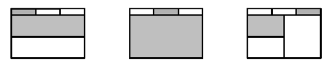
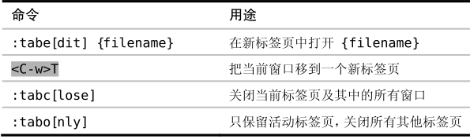
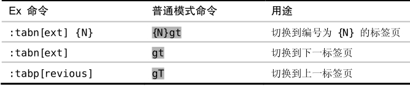

）。如果你习惯于使用其他文本编辑器，那么可能刚开始会感觉Vim 的标签页有点怪。先让我们看看其他文本编辑器和IDE中的标签页是什么样的。
）。如果你习惯于使用其他文本编辑器，那么可能刚开始会感觉Vim 的标签页有点怪。先让我们看看其他文本编辑器和IDE中的标签页是什么样的。技巧40用标签页将窗口分组
Vim 的标签页接口和其他许多文本编辑器不同，在Vim里，我们可以用标签页把窗口组织到一系列工作区里。
在 Vim 中，标签页是可以容纳一系列窗口的容器（参见:h tabpage）。如果你习惯于使用其他文本编辑器，那么可能刚开始会感觉Vim 的标签页有点怪。先让我们看看其他文本编辑器和IDE中的标签页是什么样的。
典型文本编辑器的图形界面（GUI）有一个用于编辑文件的主工作区，还有一个显示当前工程目录树的侧边栏。如果我们点击侧边栏中的文件，它会在主工作区为所选中的文件打开一个新标签页。每个打开的文件都会创建一个新标签页。在此模型中，我们可以说标签页代表了当前打开的文件。
然而在Vim中，当我们用:edit命令打开一个文件时，Vim 却不会自动创建一个新标签页，而是会创建一个新缓冲区，并把该缓冲区显示到当前窗口。正如在技巧36中见到的那样，Vim 是用缓冲区列表对打开的文件进行管理的。
Vim 的标签页与缓冲区并非一一对应的关系，相反，应该把标签页想成容纳一系列窗口的容器。图6-2显示了一个带有3个标签页的工作区，每个标签页都包含一个或多个窗口。图中灰色的方块代表了当前的活动窗口及活动标签页。

图6-2把窗口组织到标签页里
不管用的是 GVim 还是终端中的Vim，都可以使用标签页。Gvim会在其GUI 上画一个标签栏，看上去很像浏览器或其他程序中的标签栏。而当 Vim在终端里运行时，它会用文本用户界面（textual user interface, TUI）画一个标签栏。虽然标签页在外观上不太一样，但功能上并没什么不同，只是呈现方式用的是GUI还是TUI而已。
如何使用标签页
用 Vim 的标签页可以把工作分隔到不同的工作区。Vim 中的标签页更像是Linux 中的虚拟桌面，而不是像其他文本编辑器中的标签页。
假设我们正在处理某个工程中的文件，并且已经把工作区分成了几个窗口。然后，突然接到一项紧急任务，我们不得不马上切换工作内容。我们不想在当前标签页里打开新文件，因为这会把我们精心布置的工作区弄乱。此时，我们可以新创建一个标签页，并在此标签页中工作。当我们准备继续做原来的工作时，只需切回原来的标签页即可，所有的窗口都保持着我们离开时的模样。
:lcd {path}命令让我们可以设置当前窗口的本地工作目录。如果我们创建了一个新标签页，并用:lcd命令切换到另一个目录，那么就可以把每个标签页限制在不同的工程范围内。注意：:lcd只影响当前窗口，而非当前标签页。如果一个标签页包含了两个或更多的窗口，我们可以用:windo lcd {path}命令为所有这些窗口设置本地工作目录。想要了解更多信息，请查阅Vimcasts的专题9(3)。
打开及关闭标签页
用 :tabedit {filename}命令可以打开一个新的标签页，如果省略了{filename}参数的话，那么 Vim 会创建一个新标签页，里面包含一个空缓冲区。
还有一种做法，如果当前标签页中包含了不止一个窗口，我们可以用<C-w>T命令把当前窗口移到一个新标签页中（参见:h CTRL-W_T）。
如果活动标签页中只包含一个窗口，那么:close命令将关闭此窗口以及包含此窗口的标签页。我们也可以用:tabclose命令来关闭当前标签页，无论其中有多少个窗口。最后，如果想关闭除当前标签页外的所有其他标签页，可以用:tabonly 命令。

在标签页间切换
标签页的编号从1开始，我们可以用{N}gt命令在标签页间切换，可以把此命令记成“跳到标签页{N}”。当此命令带一个数字前缀时，Vim 会跳到指定编号的标签页；如果省略了数字前缀，则会跳到下一个标签页。gT命令的功能与此相同，只是跳转方向相反。

重排标签页
用:tabmove [N]命令可以重新排列标签页。当[N]为0时，当前标签页会被移到开头；如果省略了[N]，当前标签页会被移到结尾。如果你的终端支持鼠标，或是你正在使用GVim，那么你也可以通过鼠标拖曳来进行重排操作。
(1) https://github.com/tpope/vim-unimpaired
(2) http://vimcasts.org/e/7
(3) http://vimcasts.org/e/9